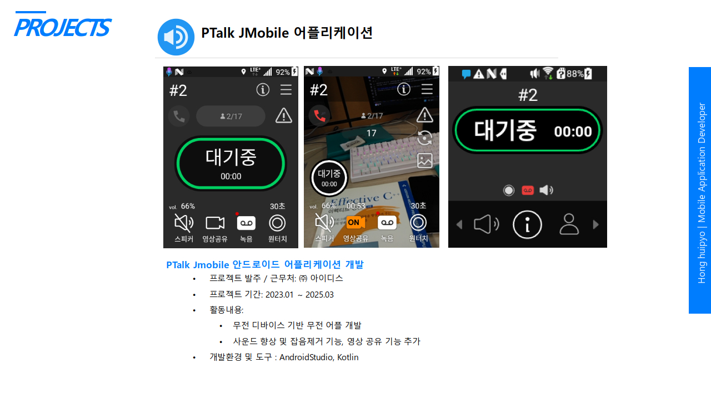

FIG. 02.1

PTalk JMobile Android 앱
무전 디바이스 기반 무전 앱에 사운드 향상, 잡음 제거, 영상 공유 기능을 더했습니다.
- ROLE
- Android 앱 개발 · 기능 개선 · 미디어 공유 구현
- RESULT
- 아이디스 재직 중 제품 기능 개선과 유지보수 수행
- Android
- Kotlin
- Android Studio
- Media
- 잡음 제거 · 사운드 품질 개선
- 실시간 영상 공유 기능 구현